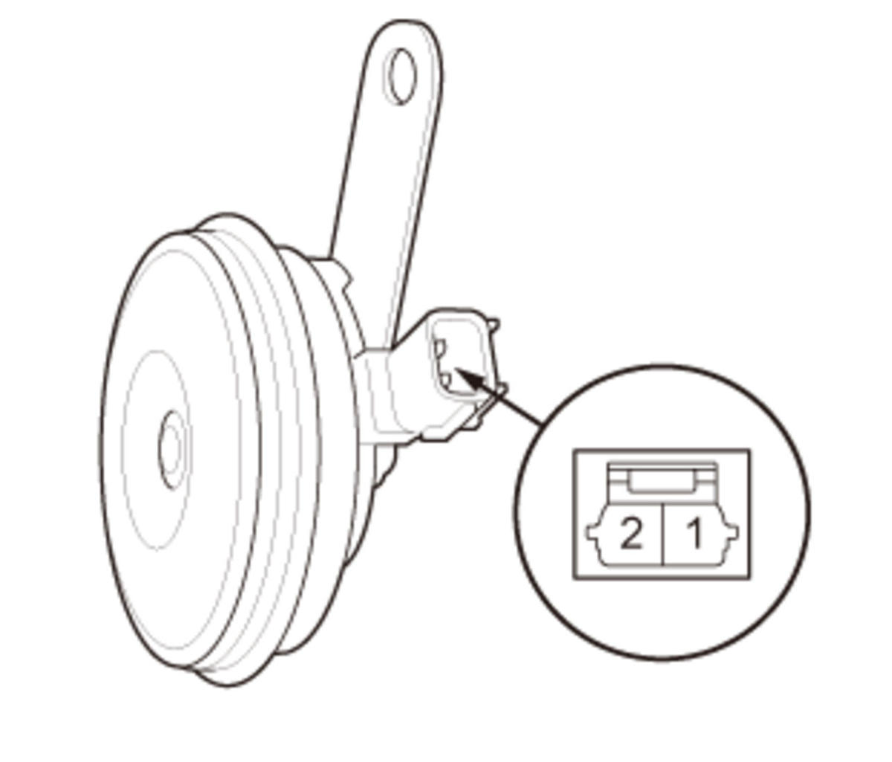
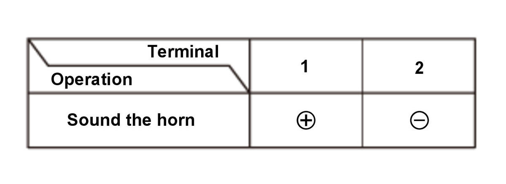

  Courtesy of HONDA, U.S.A., INC.HONDA, U.S.A., INC.
Courtesy of HONDA, U.S.A., INC.HONDA, U.S.A., INC.
|
1. Test the horn by momentarily connecting 12 volt battery power to the terminal No. 1, and 12 volt battery ground is connecting to terminal No. 2. The horn should sound. 2. If it fails to sound, replace the horn.
|